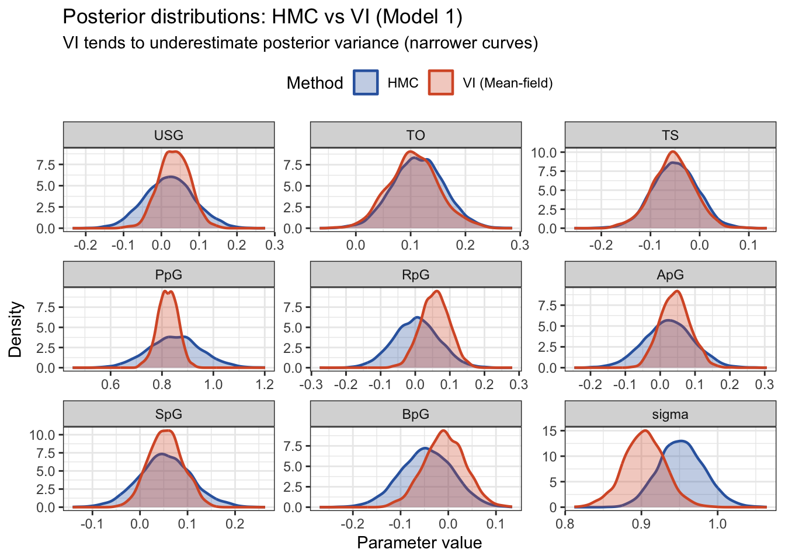

# packages being usedlibrary(tidyverse)library(corrplot)library(dplyr)library(GGally)library(car)NBA_Player_Stats <-read.csv("Datasets/2025-2026 NBA Player Stats - NBAstuffer.csv")NBA_Player_Stats <- NBA_Player_Stats[, -1]NBA_Player_Contracts <-read.csv("Datasets/2025-26 NBA Player Contracts.csv")result <-merge(NBA_Player_Stats, NBA_Player_Contracts, by.x ="NAME", by.y ="Player")head(result)
We decided to do Bayesian Inference on this question: Can we use the posterior predictive distribution to identify players who are significantly overpaid or underpaid relative to their market value?
First, we merged the two datasets we found into one dataset. Then we perform EDA on the dataset, explore the distribution of variables to find if there exists patterns, outliers, and we would also want to find if there’s any relationship between variables which would influence our later on analysis. Data cleaning is also conducted at this step as well by dropping some columns that are unrelated to our research question and removing the outliers we find.
The two methods we decided to use are:
Using stan to build a Bayesian linear regression model.
Before building the model, we will do variable selection based off the definition of the variables, and using methods like VIFs, forward model selection to choose the appropriate variables for the model. Then we will use the model to do stan, choosing the appropriate prior and posterior for the variables, and do posterior predictive distribution to identify players who are significantly overpaid or underpaid relative to their market value.
MCMC Metropolis-Hastings
We decided to do something related to MH algorithm. We implemented the Metropolis-Hastings algorithm manually to sample from the posterior distribution. Then, compare the MCMC result with the Stan method result. This allows us to determine whether or not those two methods produce consistent posterior estimates.
Data Cleaning
We notice that our contracted salary columns (X2025.26 to X2030.31) are treated as character instead of numeric because of the extra dollar sign ($). We must remove the sign and set these to numeric for later analysis.
result <- result %>%mutate(across(starts_with("X20"), ~as.numeric(gsub("\\$", "", .x))))class(result$X2025.26)
[1] "numeric"
We also need to check whether there are any NA values for our response variable; if NA exists we would need to drop that row.
result[is.na(result$X2025.26), ]
NAME TEAM CUR POS AGE GP MpG USG. TO. FTA FT. X2PA X2P. X3PA
88 Chris Livingston Cle * F 22.4 3 5.8 17.9 0 1 1 4 1 3
X3P. eFG. TS. PpG RpG ApG SpG BpG TOpG P.R P.A P.R.A VI ORtg DRtg Rank
88 0 0.571 0.605 3 1 0.3 0.3 0 0 4 3.3 4.3 6.7 129 91 381
Team X2025.26 X2026.27 X2027.28 X2028.29 X2029.30 X2030.31 Guaranteed
88 MIL NA NA NA NA NA NA $2296274
Additional
88 livinch01
There exists one row which misses the value for our response variable, we drop this observation.
We notice that the distribution of the contracted salary (X2025.26) is heavily right-skewed. A log transformation is necessary in order to standardize the variable.
Salary by Position
# Positionggplot(df, aes(x = POS, y =log(Salary))) +geom_boxplot() +labs(title ="Side by side boxplot of Log(Salary) by position")
# Position boxplot after data cleaningggplot(df, aes(x = POS, y =log(Salary))) +geom_boxplot() +labs(title ="Side by side boxplot of Log(Salary) by position (after cleaning)")
Predictor Distributions and Relationships with Log(Salary)
USG TO TS PpG RpG ApG SpG BpG
2.543840 1.244512 1.239870 6.016229 2.464104 2.920397 1.777892 1.773535
We notice that for the heat map, there’s no correlation coefficient greater than \(0.8\), which means that all the variables at this stage are not considered to be highly correlated to each other. So we decide not to drop any of them.
Note that for our VIF values, there exists one VIF value of \(6.016229\) (PpG) which is normally considered to be a concerning threshold that requires further investigation since this variable could potentially be affecting coefficient estimates. Since PpG represents points per game, higher PpG surely results in higher Salary. However, we decide not to drop this column, since this VIF value is not extremely high (less than 10), and this variable acts as a key factor to consider for our research question.
According to the distributions of our explanatory variables, we notice that those variables all have different ranges. In order to do later on analysis, we need to standardize our 8 predictors to make our prior specifications become consistent. Without standardization, coefficients are not comparable. In conclusion, Standardization ensures that the same prior is equally informative for all predictors regardless of their original units, and the posterior coefficients can be directly compared to assess the relative importance of each stat.
NAME POS Actual_Salary Predicted_Salary
81 Charles Bassey C-F 263940 2460660
82 Charles Bassey C-F 263940 2424952
83 Charles Bassey C-F 263940 2451396
89 Christian Koloko C 263940 2275392
90 Christian Koloko C 263940 2237604
91 Christian Koloko C 263940 2257355
92 Christian Koloko C 263940 2224512
111 Dalano Banton F 263940 2500621
112 Dalano Banton F 263940 2533152
113 Dalano Banton F 263940 1970704
114 Dalano Banton F 263940 1941259
280 Jordan Miller G 712637 5544594
319 Keyonte George G 4278960 40784914
323 Killian Hayes G 263940 2776887
324 Killian Hayes G 263940 2799348
332 Kobe Sanders G 475497 4378675
347 Lawson Lovering C 87784 4427480
394 Monte Morris G 321184 2182365
431 Patrick Baldwin Jr. F 263940 2204641
432 Patrick Baldwin Jr. F 263940 2138125
435 Patrick Baldwin Jr. F 263940 2603725
436 Patrick Baldwin Jr. F 263940 2597286
458 Russell Westbrook G 2296274 16629512
# Model 2y_rep_model2 <-extract(fit_m2, "y_rep")$y_rep# posterior predictive distribution mean & 95% ci（log scale）ppd_model2_mean <-apply(y_rep_model2, 2, mean)ppd_model2_lower <-apply(y_rep_model2, 2, quantile, 0.025)ppd_model2_upper <-apply(y_rep_model2, 2, quantile, 0.975)results_model2 <-data.frame(NAME = df$NAME,POS = df$POS,Actual_Salary = df$Salary,log_Salary = y,PPD_mean = ppd_model2_mean,PPD_lower = ppd_model2_lower,PPD_upper = ppd_model2_upper,# change back to original salaryPredicted_Salary =exp(ppd_model2_mean),Lower_Salary =exp(ppd_model2_lower),Upper_Salary =exp(ppd_model2_upper))# overpaid / underpaidresults_model2$Status <-"Fair"results_model2$Status[results_model2$log_Salary > results_model2$PPD_upper] <-"Overpaid"results_model2$Status[results_model2$log_Salary < results_model2$PPD_lower] <-"Underpaid"cat("\nOverpaid players:\n")
NAME POS Actual_Salary Predicted_Salary
81 Charles Bassey C-F 263940 2575444
82 Charles Bassey C-F 263940 2550302
83 Charles Bassey C-F 263940 2581074
90 Christian Koloko C 263940 1694604
111 Dalano Banton F 263940 2529156
112 Dalano Banton F 263940 2518943
113 Dalano Banton F 263940 2146119
114 Dalano Banton F 263940 2147026
280 Jordan Miller G 712637 5451340
319 Keyonte George G 4278960 37488205
323 Killian Hayes G 263940 2723548
324 Killian Hayes G 263940 2744729
332 Kobe Sanders G 475497 4283779
347 Lawson Lovering C 87784 3052961
394 Monte Morris G 321184 2242864
399 Myron Gardner F 395029 2561054
431 Patrick Baldwin Jr. F 263940 2563822
432 Patrick Baldwin Jr. F 263940 2511565
435 Patrick Baldwin Jr. F 263940 2630335
436 Patrick Baldwin Jr. F 263940 2581986
458 Russell Westbrook G 2296274 16152846
True salaries against the 95% posterior predictive intervals Plot
# using model1.stan for VIfit_m1_vi <-vb(stan_model("model1.stan"),data = stan_data_m1,algorithm ="meanfield",seed =42)
Chain 1: ------------------------------------------------------------
Chain 1: EXPERIMENTAL ALGORITHM:
Chain 1: This procedure has not been thoroughly tested and may be unstable
Chain 1: or buggy. The interface is subject to change.
Chain 1: ------------------------------------------------------------
Chain 1:
Chain 1:
Chain 1:
Chain 1: Gradient evaluation took 4e-05 seconds
Chain 1: 1000 transitions using 10 leapfrog steps per transition would take 0.4 seconds.
Chain 1: Adjust your expectations accordingly!
Chain 1:
Chain 1:
Chain 1: Begin eta adaptation.
Chain 1: Iteration: 1 / 250 [ 0%] (Adaptation)
Chain 1: Iteration: 50 / 250 [ 20%] (Adaptation)
Chain 1: Iteration: 100 / 250 [ 40%] (Adaptation)
Chain 1: Iteration: 150 / 250 [ 60%] (Adaptation)
Chain 1: Iteration: 200 / 250 [ 80%] (Adaptation)
Chain 1: Success! Found best value [eta = 1] earlier than expected.
Chain 1:
Chain 1: Begin stochastic gradient ascent.
Chain 1: iter ELBO delta_ELBO_mean delta_ELBO_med notes
Chain 1: 100 -2237.629 1.000 1.000
Chain 1: 200 -1572.932 0.711 1.000
Chain 1: 300 -759.144 0.832 1.000
Chain 1: 400 -762.136 0.625 1.000
Chain 1: 500 -760.908 0.500 0.423
Chain 1: 600 -759.832 0.417 0.423
Chain 1: 700 -760.691 0.358 0.004 MEDIAN ELBO CONVERGED
Chain 1:
Chain 1: Drawing a sample of size 1000 from the approximate posterior...
Chain 1: COMPLETED.
Warning: Pareto k diagnostic value is 0.75. Resampling is unreliable.
Increasing the number of draws or decreasing tol_rel_obj may help.
# using model2.stan for VIfit_m1_vi <-vb(stan_model("model2.stan"),data = stan_data_m2,algorithm ="meanfield",seed =42)
Chain 1: ------------------------------------------------------------
Chain 1: EXPERIMENTAL ALGORITHM:
Chain 1: This procedure has not been thoroughly tested and may be unstable
Chain 1: or buggy. The interface is subject to change.
Chain 1: ------------------------------------------------------------
Chain 1:
Chain 1:
Chain 1:
Chain 1: Gradient evaluation took 9.5e-05 seconds
Chain 1: 1000 transitions using 10 leapfrog steps per transition would take 0.95 seconds.
Chain 1: Adjust your expectations accordingly!
Chain 1:
Chain 1:
Chain 1: Begin eta adaptation.
Chain 1: Iteration: 1 / 250 [ 0%] (Adaptation)
Chain 1: Iteration: 50 / 250 [ 20%] (Adaptation)
Chain 1: Iteration: 100 / 250 [ 40%] (Adaptation)
Chain 1: Iteration: 150 / 250 [ 60%] (Adaptation)
Chain 1: Iteration: 200 / 250 [ 80%] (Adaptation)
Chain 1: Success! Found best value [eta = 1] earlier than expected.
Chain 1:
Chain 1: Begin stochastic gradient ascent.
Chain 1: iter ELBO delta_ELBO_mean delta_ELBO_med notes
Chain 1: 100 -2222.685 1.000 1.000
Chain 1: 200 -1853.417 0.600 1.000
Chain 1: 300 -1097.254 0.629 0.689
Chain 1: 400 -762.824 0.582 0.689
Chain 1: 500 -763.833 0.466 0.438
Chain 1: 600 -757.405 0.389 0.438
Chain 1: 700 -756.981 0.334 0.199
Chain 1: 800 -755.586 0.292 0.199
Chain 1: 900 -756.787 0.260 0.008 MEDIAN ELBO CONVERGED
Chain 1:
Chain 1: Drawing a sample of size 1000 from the approximate posterior...
Chain 1: COMPLETED.
Warning: Pareto k diagnostic value is 1.01. Resampling is disabled. Decreasing
tol_rel_obj may help if variational algorithm has terminated prematurely.
Otherwise consider using sampling instead.
library(bayesplot)
Warning: package 'bayesplot' was built under R version 4.5.2
This is bayesplot version 1.15.0
- Online documentation and vignettes at mc-stan.org/bayesplot
- bayesplot theme set to bayesplot::theme_default()
* Does _not_ affect other ggplot2 plots
* See ?bayesplot_theme_set for details on theme setting
library(tidyverse)pars_of_interest <-c(paste0("beta[", 1:8, "]"), "sigma")draws_hmc <-as.matrix(fit_m1, pars = pars_of_interest)draws_vi <-as.matrix(fit_m1_vi, pars = pars_of_interest)beta_labels <-c("USG","TO","TS","PpG","RpG","ApG","SpG","BpG","sigma")# HMC vs VI的posterior densitydf_hmc <-as.data.frame(draws_hmc) %>%pivot_longer(everything(), names_to ="parameter", values_to ="value") %>%mutate(method ="HMC")df_vi <-as.data.frame(draws_vi) %>%pivot_longer(everything(), names_to ="parameter", values_to ="value") %>%mutate(method ="VI (Mean-field)")df_combined <-bind_rows(df_hmc, df_vi)param_map <-setNames(beta_labels, pars_of_interest)df_combined$parameter <- param_map[df_combined$parameter]df_combined$parameter <-factor(df_combined$parameter, levels = beta_labels)ggplot(df_combined, aes(x = value, fill = method, color = method)) +geom_density(alpha =0.3, linewidth =0.8) +facet_wrap(~parameter, scales ="free", ncol =3) +scale_fill_manual(values =c("HMC"="#3266ad", "VI (Mean-field)"="#D85A30")) +scale_color_manual(values =c("HMC"="#3266ad", "VI (Mean-field)"="#D85A30")) +labs(title ="Posterior distributions: HMC vs VI (Model 1)",subtitle ="VI tends to underestimate posterior variance (narrower curves)",x ="Parameter value", y ="Density", fill ="Method", color ="Method" ) +theme_bw() +theme(legend.position ="top")

# quantify the mean of posterior and difference between SDcomparison_df <-data.frame(Parameter = beta_labels,HMC_mean =colMeans(draws_hmc),VI_mean =colMeans(draws_vi),HMC_sd =apply(draws_hmc, 2, sd),VI_sd =apply(draws_vi, 2, sd)) %>%mutate(mean_diff =round(abs(HMC_mean - VI_mean), 4),sd_ratio =round(VI_sd / HMC_sd, 3), # <1 represents VI undermines varianceVI_narrower =ifelse(sd_ratio <1, "Yes", "No") )print(comparison_df)